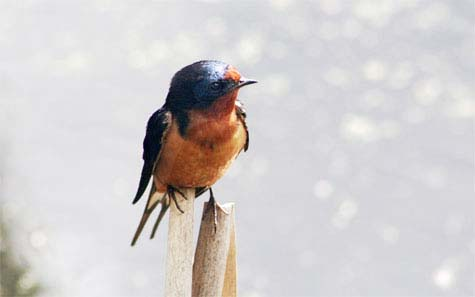

متن آزمایشی
روی شاخه نازک درخت بیدی که سایه نرمش تن پوش خاک خشک شده بود، پرستویی برای استراحت نشسته بود. این مرغک زیبا راه درازی را طی کرده بود و از سرزمینهای دور میآمد و خواستهاش این بود تا به محل زندگی مرغهای بهشتی برود. آخر تعریفهای شگفت انگیز زیادی را از آنجا شنیده بود. اینکه چقدر مرغان آنجا زیبایند و چه لباسهای رنگارنگ و زیبایی به تن دارند. گویی به مانند پرندگان اشرافی بوده و بسیار در آوازه خوانی و دلبری سرآمد همه مرغانند. این شد که پرستو برای رسیدن به آن بهشت زیبا بال گشود و راهی پرواز شد.

پرستو هنوز از جایش بر نخواسته بود که ناگهان عقاب بزرگی را در آسمان آبی دید. بالهای این پرنده آنقدر بزرگ بود که پرستوی کوچک با دیدنش شگفتزده شد و به آهستگی به سوی عقاب رفت و از وی راجع به محل زندگی پرندههای بهشتی سؤال کرد.
عقاب از دیدن پرستو و در خواستش تعجب کرد و گفت: ای پرنده کوچک تو کجا و آنجا کجا! تو میدانی که چه راه درازی در پیش داری! فکر میکنی تو با این بالهای کوچکت قادری که به آنجا برسی؟ من که سلطان آسمانها هستم هنوز نتوانستم آنجا را از نزدیک ببینم و ترجیح میدهم که در همین آسمان پایین پرواز کنم. حال تو هم از ادامه سفر منصرف شو و تا دیر نشده و اتفاق بدی برایت نیافتاده به خانهات برگرد.
پرستو با شنیدن حرفهای مأیوس کننده عقاب ناراحت شد و گفت: ای عقاب درست است که بالهایم کوچک و کم پر است اما در قلبم شوقی دارم که مرا برای پرواز به فراسوی مکان یاری میکند. پس اکنون به راه میافتم و نیازی به کمکت ندارم.
عقاب هم با نیش خندی وی را بدرود گفت و رفت.
پرستوی کوچک در نیمههای راه بود که ستارگان پر نور درآسمان تاریک هویدا شدند. پس با عشق وافر رو به ستاره بزرگ کرد و گفت: ای ستاره تو میدانی که من از کجا میآیم و به کجا میروم و راهم چقدر طولانی است. میخواهم که مرا مساعدت کنی تا در رسیدن به مقصود عافیت یابم. ستاره پر نور به پرستو سلامی کرد و گفت: آری میدانم که عازم کجائی و همینطور میدانم که چقدر میل وصال داری! پس تو را راهنمایی میکنم در ابتدا باید در راه جنوب ازچند کوه گذر کنی تا جایی رسی که دریای فیروزهای با خشکی کوچکی در میان آن را که چون جواهر میدرخشد، ببینی.
در آن جزیره، جنگل سبز و انبوهی است که درختانش سالیان درازی از آب چشمههای زلال مینوشند و طنین ملایم نسیم صبحگاهی همواره نوازشگر برگهای زیبایشان است. آری مرغان بهشتی را در آنجا خواهی یافت.